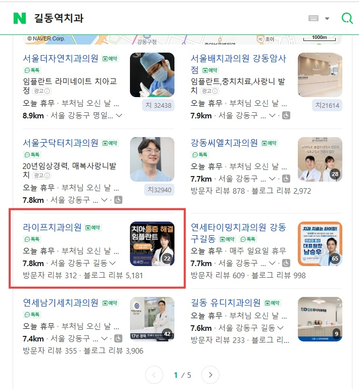
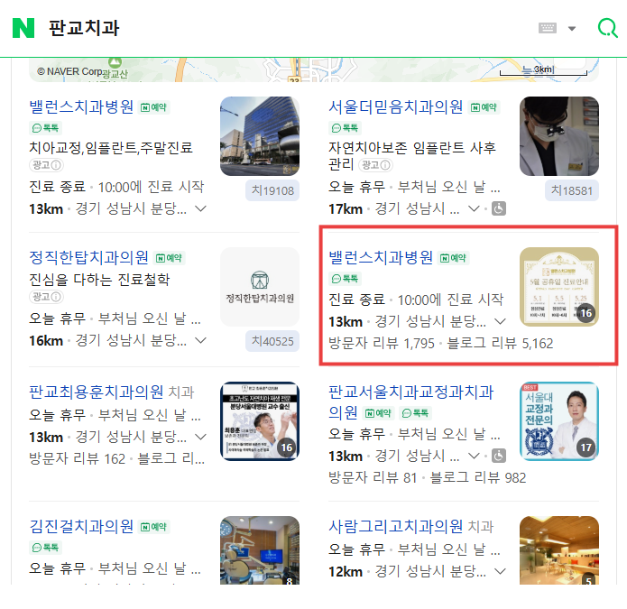
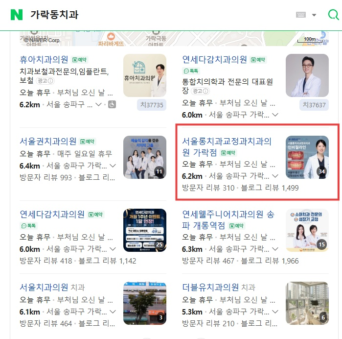
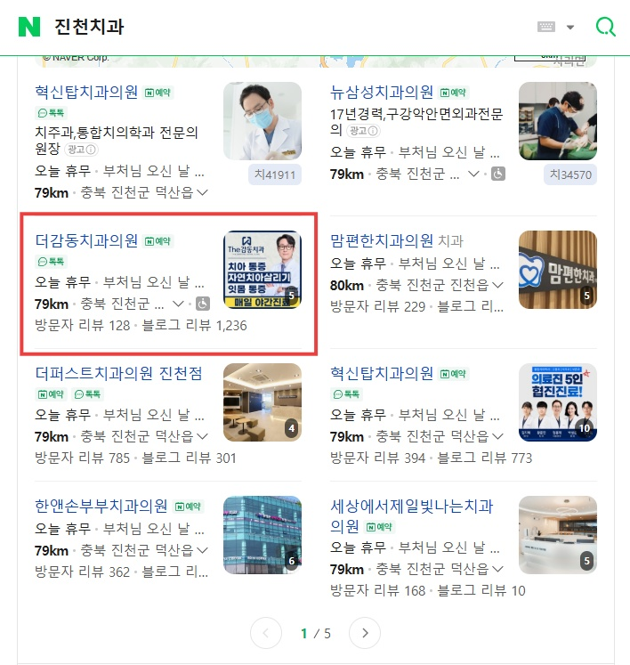
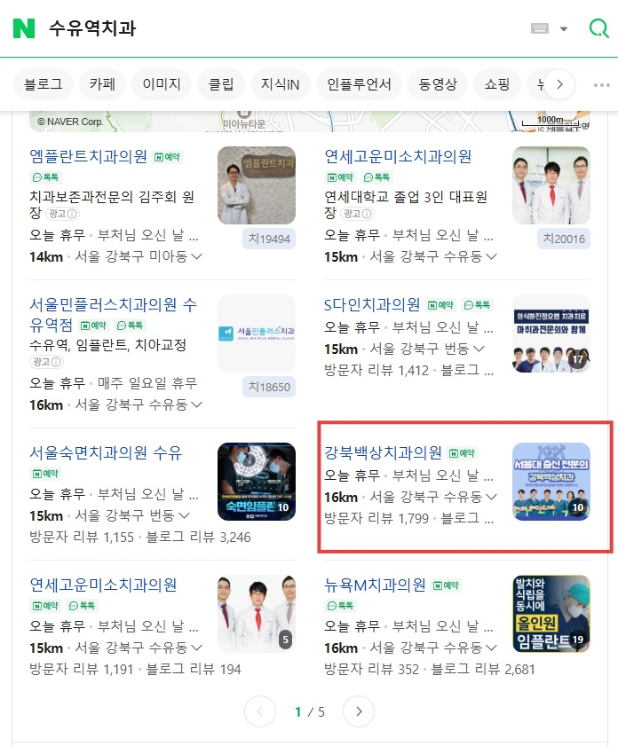
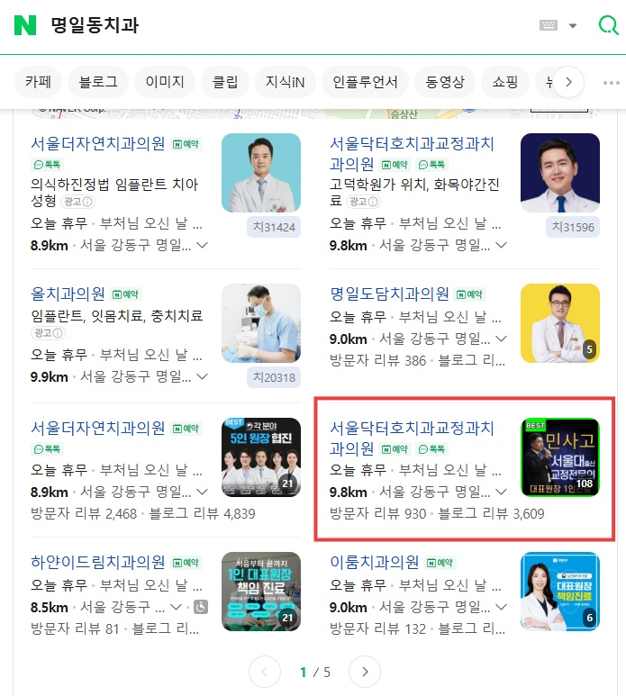
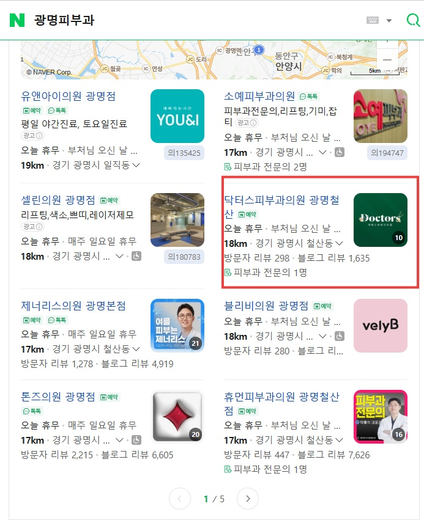

네이버 플레이스란?
환자가 병원을 찾는
가장 큰 경로입니다
국내 검색 점유율 70% 이상인 네이버.
환자의 10명 중 8명은 병원 방문 전 네이버에서 검색합니다.
네이버 플레이스 상위에 노출되면 광고비 없이도 지속적인 신규 환자 유입이 가능합니다. 스크롤을 내리기도 전에 보이는 지도 박스 1~5위(1페이지) — 그 자리가 곧 매출입니다.
- 유료 광고 대비 지속 효과 — 광고 꺼져도 유지
- 1페이지 노출이 2페이지 병원보다 매출 2~3배 높음
- 리뷰 누적으로 브랜드 신뢰도 동시 상승
- 의료법 준수 리뷰·콘텐츠 전략 운영

조작 없이 100% 실제 노출된 병원
이미 함께한 병원들이
1페이지에 있습니다
아래는 한번 마케팅과 함께한 실제 파트너 의료기관의 네이버 플레이스 순위 현황입니다.
모든 결과는 불법 프로그램 없이 100% 정상 작업으로 달성했습니다.






위 성과는 실제 작업 결과이며, 불법 매크로·프로그램 없이 100% 합법적인 리워드 방식으로만 진행했습니다. 의뢰인 보호를 위해 병원명 일부는 블러 처리되었습니다.
한번 마케팅만의 차별점
남들과 조금 다릅니다.
그래서 결과가 다릅니다.
병원 전문
키워드 분석
진료과목·지역·경쟁강도를 입체적으로 분석합니다.
100% 리워드 방식
불법 프로그램 NO
매크로·봇 없이 실제 사용자의 자연스러운 클릭과 리뷰로만 작업합니다.
빠르고 정확한
순위 최적화
평균 4~8주 내 1페이지 진입을 목표로 합니다.
병원 사진촬영 &
플레이스 세팅
네이버 플레이스 내 모든 항목을 최적 세팅합니다.
이런 원장님께 강력 추천
혹시 이 중에
해당되시나요?
"네이버 검색해도 경쟁 병원만 보이고
우리 병원은 안 나와요."
"네이버 키워드 광고에 매달
수백만 원 나가는데 효과를 모르겠어요."
"개원한 지 얼마 안 됐는데
신규 환자가 너무 없어요."
"이사 온 주민들이 우리 병원을
모르는 것 같아요. 지역에 알려지고 싶어요."
"리뷰 수가 경쟁 병원보다 적어서
환자들이 불안해하는 것 같아요."
"마케팅에 신경 쓸 시간이 없어요.
진료만 집중하고 싶어요."
하나라도 해당된다면, 지금 무료 상담을 신청하세요.
무료 상담 신청이런 분께는 맞지 않을 수 있습니다
가격만 보고 선택하시면 결과도 그에 맞습니다. 저희는 최저가 경쟁을 하지 않습니다.
정상적인 방법으로는 최소 4~8주가 필요합니다. 빠른 결과를 약속하는 업체는 의심하세요.
같은 지역·업종에 복수 원장님과 계약하지 않습니다. 지역당 1개 기관 원칙을 고수합니다.
자주 묻는 질문
네이버 플레이스에 대해
궁금한 점을 확인하세요
정말 불법 프로그램을 쓰지 않나요?
계약 기간은 얼마나 되나요?
효과가 언제쯤 나타나나요?
작업이 끝나면 순위가 떨어지나요?
병원 외 다른 업종도 가능한가요?
서울 외 지방 병원도 가능한가요?
지금 바로 우리 병원의
플레이스 순위를 올려보세요
무료 키워드 분석 + 경쟁 병원 현황 분석을 상담 시 무료로 제공합니다.
지역당 1개 병원만 계약하므로, 자리가 제한됩니다.
평일 09:00–18:00 · 상담 후 24시간 이내 답변